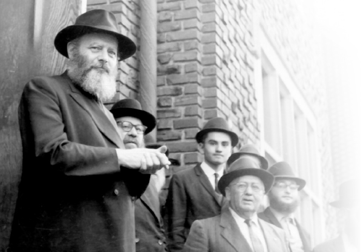

הציווי האלוקי “לך לך מארצך” מעורר השתאות ומרטיט את נימי הלב נוכח הניסיון העצום ש
הציווי האלוקי “לך לך מארצך” מעורר השתאות ומרטיט את נימי הלב נוכח הניסיון העצום שעמד אברהם אבינו. גם בדורנו, אלפי זוגות שלוחים עברו ועוברים את הניסיון העצום הזה, בכך שקיימו בהידור רב את הציווי האלוקי שיצא מפי הרבי מה”מ – ‘לך לך מארצך ממולדתך ומבית אביך אל הארץ אשר אראך’. בלי פשט’לאך • מנחם זיגלבוים מ
הציווי האלוקי “לך לך מארצך” מעורר השתאות ומרטיט את נימי הלב נוכח הניסיון העצום שעמד אברהם אבינו. גם בדורנו, אלפי זוגות שלוחים עברו ועוברים את הניסיון העצום הזה, בכך שקיימו בהידור רב את הציווי האלוקי שיצא מפי הרבי מה”מ – ‘לך לך מארצך ממולדתך ומבית אביך אל הארץ אשר אראך’. בלי פשט’לאך • מנחם זיגלבוים מספר על חוויות של שלוחים שעברו את הקושי בניתוק מהמשפחה, מהקהילה ואפילו מהמכולת השכונתית המוכרת וקיימו את ה”לך לך” המודרני של ימינו…

“מאשר אני קבלת מכתבו מכ״ה תמוז, ות״ח על שימת לבבו לכתוב לי רושמיו מעסקני חב״ד שפגש בעת ביקורו בכמה ערים בצרפת. ולמותר להדגיש שראויים וזקוקים הם לעידוד, כיון שמקיימים בעצמם, כלשון הכתוב, ״לך לך מארצך וממולדתך ומבית אביך״, במדינה זרה ולשון זרה ותנאים קשים וכו׳ בשליחות מצוה להפיץ היהדות, התורה ומצותי׳ במקומות נידחים מבחינת מצב היהדות שם.”
(ממכתב ערב שבת נחמו ה׳תשל״ט)
אחד החסידים נכנס פעם לחדרו הקדוש של הרבי, ושם לב כי פניו של הרבי רציניות למדי. סיפר לו הרבי שלפני זמן מה ניגשו אליו בני זוג שזה עתה נישאו וביקשו את רשותו לצאת לשליחות באחת המדינות והוא התנה זאת בכך שיביאו את אישור ההורים לכך. לאחר ימים מספר שבו אליו בני הזוג עם האישור, והרבי העניק להם את ברכתו.
לפתע פניו של הרבי הרצינו עוד יותר: “האישה היא אחות יחידה לחמישה אחים שכולם משמשים כשלוחים במדינות שונות ברחבי העולם” – וכאן החל הרבי למנות את מקום שליחותו של כל אחד מהאחים – “וכעת נשארים ההורים כאן לבד, כשכל הילדים נמצאים הרחק מאיתם…”
“ברגע זה” – המשיך הרבי – “הם נמצאים בשדה התעופה ונשפכות שם דמעות רבות; אומנם על אף שאלו הם דמעות של שמחה, אבל בכל זאת אלו דמעות, וברגע זה נמצא אני נמצא יחד אתם”…
דומה כי סיפור נפוץ זה משקף ביותר את הרגישות העצומה של המשלח שעה שבניו-חסידיו עקרו עצמם מביתם, משפחתם וקהילתם ועשו “לך לך מארצך ממולדתך ומבית אביך” במובן המהודר ביותר, כאשר יצאו בשליחותו לערי השדה, למדינות קרובות ורחוקות כדי להפיץ את אור התורה והחסידות בכל מקום ולהכין את העולם לקראת בואו של המלך המשיח.
רבים רבים משתאים נוכח התופעה המיוחדת הזאת – שעה שזוגות צעירים עוזבים את כל אשר להם, את הקן ואת החממה העוטפת בחום ואהבה; את המכולת הקרובה עם המוצרים הכשרים בשפע, את בית הכנסת השכונתי עם הבעל תפילה המוכר, או את מקווה הטהרה שבמרחק דקות הליכה – ומרחיקים נדוד, לעתים נסיעה קצרה של שעה לכל כיוון ולעתים נסיעה של שעות ארוכות, ויש אף מקרים של טיסה ממושכת אל המרכז היהודי הקרוב ביותר.
אלפי אלפי זוגות שלוחים קיימו בחייהם בהידור רב את הציווי האלוקי שיצא מפי הרבי מה”מ – לך לך מארצך ממולדתך ומבית אביך אל הארץ אשר אראך. בלי פשעטלאך.
החזן ובעל התפילה החסידי הרב מרדכי (מוטי) זיגלבוים, פוקד רבות את מרכזי ליובאוויטש ברחבי ארצות הברית, והוא מספר:
“במסגרת תפקידי כחזן ובעל מנגן, אני מרבה להסתובב אצל כמה שלוחים ברחבי ארצות הברית. בבתי הכנסת הגדולים שהם בנו, אני נושא תפילה בעד עמך בית ישראל הנמצאים במקום זה. זה קורה לא רק בימים נוראים, אלא גם בחגי ישראל ומועדיו, ולעתים תכופות גם בשמחות שעורכים חברי הקהילה, והם מבקשים שאכבד אותם בשירה ובפרקי חזנות.
“אני מרבה לשהות אצל שלוחי הרבי ברחבי ארצות הברית, ותמיד מפליא אותי לראות כיצד הם פועלים במסירות נפש רבה. המחיר שהם משלמים הוא יקר וגבוה מאוד: הבדידות, המאבק התמידי, הקושי הלוגיסטי שבכל דבר. אם זה מקום שרק מתחיל, מדובר גם בדברים האלמנטריים ביותר כמו צרכי מכולת או מקווה. כל דבר הוא בגדר מבצע מסובך”.
ר’ מוטי זיגלבוים ממשיך ומפרט ממה שעיניו רואות, ולא זר: “מבחינה חברתית, קשה, קשה מאוד, אין לך חברים כמו שאתה רגיל; בני הקהילה מתייחסים אליך כמו לרב, לא כמו אל חבר ואתה תמיד צריך לשמש כדוגמה בלתי פוסקת.
“גם בחינוך – במקומות רבים הילדים לומדים עד גיל מסוים בבתי ספר יהודיים מקומיים, אבל לא חרדים, כשאת כל שאר החומר התורני חייבים להשלים אתם בבית. שלא לדבר על בעיות חברתיות כמו מסיבות יומולדת שנערכות בגן ואי אפשר לאכול כלום, מסיבות משותפות לבנים ובנות שאי אפשר שהבת בגיל תשע או עשר תלך אליהן – והמחיר הוא כבד.
“עוד לא עסקנו בשלוחים רבים שנאלצים להיפרד מילדיהם בגיל עשר בערך כדי לשלוח אותם לסבא וסבתא בקראון הייטס, כדי שיתחילו ללמוד בבית ספר חסידי רגיל ויגדלו להיות שליחים בעצמם. לא קל לאף הורה לשלוח ילד בגיל כזה מהבית, ואני לא יודע אם הייתי עומד בזה.
“כל שליח אחראי להשיג מימון לפרנסתו, לאחזקת המוסדות ולפעילות השוטפת שלו! זהו לחץ תמידי למצוא מימון בלתי פוסק. זה לא קל! מדובר במחזורי כספים שאפשר רק לחלום עליהם. זו עבודה של יום ולילה שגורמת לכאב ראש לא קטן.
“כל שליח בפוטנציה הוא ‘ביזנס-מן’ מצוין שבשוק החופשי יכול היה להרוויח הון רב. מדובר באנשים שמגיעים לשומקום, יוצרים לעצמם חוג ידידים ומוקירים, גורמים להם לראות את חשיבות העבודה שלהם במקום, וממילא להיות שותפים בפעילות בדרגה זו או אחרת.
“צריך גם לדאוג לאירוח בלתי פוסק של אנשים, בעיקר בלילות שבת וביומם. לפעמים מגיעים ארבעים וחמישים איש לכל סעודה. בשני מקומות שבהם אני משמש כחזן, השליחוֹת צריכות ללדת בעוד כחודש, והן אירחו במשך חודש תשרי מאות רבות של אנשים!
“איך באמת מתמודד אדם צעיר, שנוחת עם אישה וילדים למקום שהוא כלום רוחני ואפס גשמי? הכול בכוחות המשלח, אין לזה שום הסבר אחר. הם יודעים מי שלח אותם לשם, בשליחות מי הם קמים כל בוקר, ולמי הם חייבים לתת דין וחשבון”.
אין בבריאנסק מי שיפיג את הבדידות הלא פשוטה
מעניינת היא הסתכלותו של כתב העיתון “הרלד נט” היוצא-לאור במחוז סנוהומיש, וושינגטון, הכותב על בדידותם של שלוחי הרבי באזור מגוריו. הוא הכיר את הרב זאב גולדברג, שליח שהחל לפעול במערב וושינגטון אך כשנה לפני פירסום הכתבה. השליח כמובן הגיע מקראון הייטס, שם נולד וגדל. הוא התגורר עד כה בסיאטל, שם פועלים כמה שלוחים.
“תחושת הבדידות החלה כבר שם, אבל היא עלולה להחריף עוד יותר כעת, כשהוא הרב היחיד הפועל בכל האזור”, כותב גולדברג ומסביר בעיניים של יהודי אמריקאי טיפוסי ופורש בפני קוראי העיתון את מניעיו של שליח: “זו פילוסופיה חסידית-טיפוסית להגיע לכל יהודי, ולא משנה כמה הוא מבודד וכמה רחוק מיקומו. רבנים יפתחו מרכזי חב”ד בכל מקום בעולם שישנם יהודים”.
מעניינת גם הסתכלותו של כתב עיתון ‘מעריב’ אלי ברדגשטיין שהכיר מקרוב אי-אלו שלוחים ובחר למקד את רשמיו על בדידותם:
הפגישה שלי עם הרב שניאור זלמן זקלס נערכת במרכז הקהילתי היהודי של מוסקבה לרגל חגיגות העשור להקמתו של איגוד הקהילות היהודיות בחבר המדינות. האיגוד מונה 454 קהילות ואחראי על פיתוחן. כאן, אחרי חצי שנה בשליחות בעיר בריאנסק שברוסיה, מצליח הרב זקלס להיחלץ ולו לכמה ימים מהבידוד החברתי הקשה בגלות שליחותו, לאכול ולשתות כיד המלך, להיפגש עם עמיתיו השלוחים, להעביר חוויות ולנהל עד בלי די מה שהוא מכנה “שיחת חולין של אדם רגיל,” אליה ערג בימים המתארכים עד אין סוף בבריאנסק.
אחד הנושאים שכיכב בשיחות הללו, הוא הקושי לקיים חיים חרדיים במקומות כל כך מנותקים. רק כאן, בהתכנסות השנתית הרשו לעצמם השליחים לקטר על מה שכל השנה הוא חלק מהחיים – היעדר המקווה, המחסור במוצרי מזון בסיסיים, השכר הזעום וכמובן הבדידות. הם אמנם בחרו להקריב את חייהם האישיים לטובת האידיאולוגיה, אבל לכל דבר יש מחיר.
במוסקבה מתגוררים כמה מאות אלפי יהודים, יש בה מספר לא מבוטל של בתי כנסת, מסעדות וחנויות כשרות, עשרות מוסדות חינוך יהודים ואירועי תרבות. אלא שאין דומה מקרה של עיר בירה למקרה של עיר ספר גדולה 432) אלף תושבים,( אכולת קרינה רדיואקטיבית עוד מימי השריפה בכור של צ’רנוביל. משפחת זקלס היא המשפחה החרדית היחידה בבריאנסק, שרוב יהודיה כלו מן העיר ומי שנשאר בה הפך ברובו לבן התרבות הסובייטית: מתבולל, מנותק וחסר זיקה.
צריף משמש לבית כנסת, יש גם גן ובית ספר יהודי, אשת הרב מכנסת מדי כמה זמן נשים יהודיות במסגרת מועדון הנשים המקומי והרב מכנס את אנשי העסקים. היעדר קיומו של מקווה הוא רק מקרה פרטי של מציאות חיים יהודית מורכבת ביותר של משפחה שמנהלת אורח חיים חרדי. והכי קשה זו הבדידות.
אין בבריאנסק מי שיפיג את הבדידות הלא פשוטה של משפחת הרב. “קל יותר להתמודד עם יצר הרע כשאתה חלק מקהילה דתית,” אומר הרב זקלס שהגיע לעיר לפני כשנתיים, “פה אתה חי לבד. אחרי שמונה בערב אין עם מי לדבר. אני ומשפחתי בבית, אין לאן לצאת, אין מסעדות ואין מקומות מפגש, אפילו לצאת עם אשתי אני לא יכול, עד שלא מגיעים למוסקבה או לארץ ישראל.” גם עניין האוכל הכשר הוא לא פשוט, “אני כל היום בשרי,” הוא אומר ברצינות גמורה. “אין מוצרי חלב כשרים. יש רק חלב כשר שאדם מהקהילה משגיח על חליבתו, אחת לשבוע, 30 ק”מ מהעיר, בכפר סמוך. אנחנו מרתיחים את החלב ונותנים לילדים. זה כל מה שיש.
בניגוד לשליחים אחרים של ארץ ישראל וארגונים יהודיים, המעניקים משכורות נדיבות ותנאים משובחים, שליחי הרבי מליובאוויטש נאלצים להתמודד עם קשיים כלכליים לא פשוטים. קרן “אור אבנר” בראשותו של לב לבייב מממנת לשלוחים סוג של תמיכה חודשית, שמסתכמת בכ-3,000 דולר בממוצע עבור ההוצאות האישיות, סכום שבקושי מספיק לכסות את העלויות הגבוהות של קיום יהודי במקומות שאין בהם תשתית יהודית כמעט לחלוטין.
המרכז במוסקבה מצפה מכל שליח להיות מסוגל להתרים את הקהילה שלו, ובמיוחד את עשירי הקהילה, שייקחו חלק בהוצאות השונות, וכך יקטן החלק של המרכז במימון. “שליח שאינו מצליח להתרים את הקהילה שלו יתקשה לבצע את השליחות שלו,” אומר גורם באיגוד הקהילות. אולם לא כולם מצליחים.
הרב זקלס מספר שהמצב הרבה יותר מורכב ממה שנדמה לפקידות במוסקבה. “אנשי העסקים היהודים הכבדים נותנים לנו צדקה כמו שאני בארץ ישראל נותן כמה שקלים לעניים. חושבים שהכל צריך להיות בחינם.”
מכאן הקושי להבין מדוע בוחרים מאות יהודים חרדים מארץ ישראל להגיע לשליחות במרחב דובר הרוסית, המסובך עבור אדם יהודי דתי. “אם לא הייתי מאמין ברבי מליובאוויטש, שיזם את כל המהלך הזה ולקח אחריות עלינו, לא הייתי מעז לצאת לשליחות,” אומר הרב זקלס. “אני לא משקיע זמן במחשבות על הבעיות שלי וחושב שאין לי עופות כשרים או שלא שתיתי קפה בבוקר כבר חצי שנה, אלא מה לעשות כדי לקדם את הקהילה היהודית. ברירת המחדל שלי הזה להיות בשליחות. חונכתי ככה מילדות. למרות כל הקשיים, יש סיפוק גדול בעבודה. כשאתה רואה בחור יהודי שבזכותך התחתן עם יהודייה וערך חופה ושעכשיו ייוולדו לו ילדים יהודים, אתה מרגיש שהצלת עולם שלם”.
“נוסעים מאמריקה,
ארץ זבת חלב ודבש”
על קשיי ה”לך לך מארצך”, אפשר לקרוא את סיפורו המרתק של הרב שמואל הלוי גורביץ מליאון שבצרפת.
“נולדתי בצרפת, לאבי הרה”ח ר’ בערל הלוי גורביץ, מנהל בית רבקה בפריז. נולדתי באווירה של שליחות, וכל ילדותי ספוגה הייתה ברוח הקרבה ומסירות למילוי השליחות של הרבי. היה זה אך טבעי שאצא לשליחות לאחר הלימודים בכולל. התלבטתי באיזה סוג של שליחות לבחור. היו כמה הצעות, מהן שליחות חינוכית, בישיבות שונות, ועוד הצעות במספר מדינות בעולם.
“באותן שנים הרבי היה חוזר מביתו ל-770 ברגל, בשעה שבע ורבע (בימות הקיץ). באחד מימי חודש תמוז תשל”ה, כאשר הרבי חזר, פגש את הרב בנימין גורודצקי ע”ה, בא כח הרבי באירופה וצפון אפריקה, ליד 770. הרבי נעצר ושוחח עמו ארוכות. אף אחד לא שמע מה היה נושא השיחה, אבל מיד לאחר שהרבי סיים את השיחה, נכנס הרב גורודצקי לבית הכנסת וחיפש אותי. הוא פגש את חותני, הרה”ח יהושע דובראווסקי ע”ה, וביקשו לקרוא לי בדחיפות. כעבור כמה דקות ניגשתי אל הרב גורודצקי ושאלתי מה הוא צריך. הוא אמר לי כך: היות וכעת זה זמן של ‘מרכז שליחות’, תסע לליאון ותראה אם אפשר לפתוח שם בית חב”ד.
מסגנון דיבורו של הרב גורודצקי, ומהעובדה שההצעה שלו הגיעה בדחיפות מיד לאחר שסיים לדבר עם הרבי, הבנתי שזו הוראה מהרבי. בכל זאת, כתבתי לרבי שהרב גורודצקי הציע לי כך וכך, וביקשתי את ברכת הרבי. הפעם, בניגוד למכתבים קודמים, תשובת הרבי הגיעה במהירות: “באם זוגתו מסכמת יתעניין בהנ”ל, וטוב הוא וד”ל”.
אשתי הסכימה לנסוע לתקופת הקיץ לליאון, וכך הגענו שנינו לליאון בעיצומו של חופש הקיץ. הקהילה היהודית התייחסה אלינו מאוד בקרירות, כאומרים: אל תנסו להתערב לנו בחיים הקהילתיים. החודשיים הבאים היו די קשים. לאשתי, שנולדה בארצות הברית, והמנטליות הצרפתית הייתה זרה לה לחלוטין, הקשיים היו גדולים עוד יותר.
כעבור חודשיים חזרנו, וכפי הנהוג הייתי צריך לכתוב דו”ח לרבי על השליחות. אני ידעתי שבסוף הדו”ח אצטרך להוסיף עוד שורה: האם המקום ראוי לשליחות קבועה, או לא. היה ברור לי שאם המקום ראוי לשליחות, המשימה תוטל עלי. עקב הקשיים הרבים שהיו לנו בחודשיים הללו, ההחלטה הייתה קשה מאוד, ודחיתי את כתיבת הדו”ח מיום ליום.
באמצע חודש אלול הגיע הרב גורודצקי לבית חיינו. הוא נכנס ל’יחידות’ אצל הרבי, וכשיצא פגש אותי ואמר: הרבי עכשיו אמר לי, שכבר עברו כמה שבועות מאז שחזרת ועדיין אין תשובה. בתוך חצי שעה רוצה הרבי תשובה – כן או לא. רצתי מיד לביתי, סיפרתי לאשתי מה שהרבי אמר, וסיכמנו יחד לכתוב לרבי שאנחנו מסכימים לנסוע. המכתב הוכנס לרבי מיד, וקיבלנו תשובה חיובית.
התכוונו לנסוע בחודש חשוון. בשמחת תורה של אותה שנה, הרבי דרש שכל מי שיש לו סמיכה לרבנות, שיעשה גם סמיכה לדיינות. מכיוון שאשתי הייתה אז בהריון עם הילד השני, והיה מושלל אצלה ללדת באירופה, מכיוון שאז רווחה הדעה שבתי הרפואה באירופה פרמיטיביים לעומת בתי הרפואה בארצות הברית, מה גם שבניו-יורק היה לה את הרופא הפרטי שלה – חשבנו, שאולי כדאי שאשאר בניו-יורק עד הלידה, ואנצל את הזמן הזה ללימוד דיינות ושימוש אצל רבה של שכונת קראון הייטס, הרב זלמן שמעון דבורקין ע”ה, שאגב היה דודה של זוגתי תחי’.
לפני שניגשתי לשאול על כך את הרבי, הלכתי לרב חודקוב ושאלתי מה דעתו – האם ראוי בכלל לשאול את הרבי כזאת שאלה, שמשמעותה המעשית היא דחיית השליחות בכמה חודשים. הרב חדקוב הסתכל עלי בפנים מופתעות ואמר לי ברצינות תהומית: “לוקחים חייל, שולחים אותו לחזית, והוא אומר שהחזית תמתין עד שהוא יקבל ‘ידין ידין’!”
הבנתי שאין מה לשאול בנושא הזה, ולאחר תפלת מנחה חכיתי לרבי ואמרתי שאשתי רוצה להשאר ללדת בניו-יורק, ולכן אסע לבדי, ואחרי הלידה היא תצטרף אלי. הרבי מיד הגיב ואמר שזאת מחשבה נכונה, ונתן את ברכתו הקדושה.
הייתי בליאון כמה חודשים, והתחלתי להניח את היסודות לפעילות חב”דית קבועה. בז’ שבט נולדה לנו בת. נשארתי בליאון עד יו”ד שבט, כדי לערוך שם את ההתוועדות, ומיד אחר-כך נסעתי לניו-יורק. שוחחתי עם אשתי על המשך הדרך, ואמרתי לה שאנחנו נכנס ל’יחידות’ לפני הנסיעה, ונקבל את ברכותיו הקדושות של הרבי, ובכוחן נעבור את כל הקשיים.
נכנסנו ליחידות. כנהוג, כתבנו על פתק את כל מה שהיה לנו לומר, והגשנו את הפתק לרבי. פניו של הרבי היו רציניות מאוד, וכאשר הגשנו את הפתק הרבי לא הביט בו כלל, אלא אחזו בידו ובתנועה חדה הניפה לעבר השולחן והחל לדבר בקול רם, שנשמע מחוץ לחדר:
“אני לגמרי לא מבין מה קורה כאן! שלחו שליח מארצות הברית לליאון, וערכו לו קבלת פנים שלימה בעיר. כשמתחילים לבדוק היכן אתה, הרי שבת אחת היית בליאון, שבת שניה היית בפריז, ושבת שלישית היית באיזשהו מקום אחר. מה יאמרו אלה שמחפשים תואנה על ליובאוויטש?! מה שכן שמעתי, שאתה כן רצית לנסוע, לא רצית לנסוע… אני רוצה לקבל מכם עכשיו תשובה: האם אתם נוסעים מתוך שמחה?”
במשך הזמן הזה, שבעיני נדמה כנצח, הרבי לא הסתכל לעברי. אשתי שעמדה לידי הייתה חיוורת כמו סיד, ואני לא פחות. אזרתי עוז, ובקושי רב הצלחתי להוציא מפי את המילים: “רבי, אנחנו נוסעים בשמחה!”
פניו של הרבי השתנו באחת. מבע פניו הק’ נהיה רך, ובקול מרגיע אמר: “מה שעבר עבר, ומכאן ולהבא דע לך שאתה תושב של ליאון”. אחר-כך המשיך הרבי בפנים שוחקות: “נוסעים מאמריקה, ארץ זבת חלב ודבש, והיצר הרע ינסה להפריע בעניין השמחה, וכאשר תופרע אצלכם עבודת השמחה, זה יפריע לכם לכל העבודה”.
אחר-כך קמץ הרבי את אצבעותיו, הניף את ידו בתנועה מהירה לכיוון לבו, ואמר: “אילו אני הייתי בליאון, הייתי מנצל את כל הזמן שלי כדי שעוד ילד ועוד ילד ועוד ילד יכנס לחינוך יהודי הכשר”.
במהלך היחידות חזר הרבי כמה פעמים ואמר ש”מה שעבר עבר”, והדגיש -שהכל יהיה מתוך שמחה, ובין השאר אמר לי: דע לך, שבכלל, הצרפתי שונא פנים זועפות…
ביחידות זו היו כמה גילויים ברורים של רוח הקודש. בחלקם הבחנתי מיד, וחלקם הבנתי רק אחר-כך. כאשר הרבי אמר בנוגע לשבתות שלא הייתי בליאון, הייתי המום. על השבת בה הייתי בפריז, ייתכן והגיעו לרבי ידיעות מפריז שציינו עובדה זו. אבל בשבת השלישית, הייתי בעיר טולוז שלא היה שם אף אחד מאנ”ש מלבד קרוב משפחתי, השליח הרב יוסף יצחק מטוסוב, שהחל לפעול שם בשליחות, ואני בסך הכל רציתי ללמוד ממנו כיצד מתגברים על קשיי הבראשית. הוא לא דיווח לרבי על שהותי במקום, והייתי המום כאשר שמעתי זאת מהרבי. המקור היחיד שהרבי יכול היה לדעת את העובדה הזאת, הוא ברוח הקודש”.
הבדידות הרוחנית
הרב אריה רייכמן הוא שליח הרבי מה”מ בבישקאק בירת קירגיסטאן. שממה רוחנית, זה מה שפגשו הרב רייכמן ורעייתו כשהגיעו בשליחות הרבי מלך המשיח לקירגיסטאן לפני כשתים עשרה שנים. הם הכינו עצמם לפני היציאה לקושי הפיזי. קירגיסטאן היא לא מהמדינות המפותחות בעולם, אבל כפי שמספר הרב רייכמן, דווקא הקושי הרוחני היה הכי קשה בעבורו ובעבור רעייתו. כעשר שנים הם פועלים במדינה ופורסים את חסותם על כשלושת אלפים יהודים שמתגוררים במדינה, רובם בעיר הבירה. בית הכנסת שהיה מקום של עזובה, הפך למרכז קהילתי תוסס, כמו כן הקימו גן ילדים, ומסרו אינספור שיעורי יהדות.
“הקשיים הכי גדולים היו הקשיים הרוחניים”, אומר הרב רייכמן. “היו אנשים שזכרו מעט מסורת אבל חגגו ונהגו אותה לא בצורה נכונה. כשנכנסתי בשבת הראשונה לבית הכנסת, מצאתי יהודים יושבים עם עיתונים ומתדיינים על הפוליטיקה המקומית והאזורית. הייתי צריך לשנות הרגלים של שנים, ולעשות הכל בעדינות ובשכל, ומאידך גיסא, לא לוותר אף על קוצו של יוד.
“אתן לך דוגמה: בפסח הראשון שהייתי שם, פנו אלי כמה יהודים בוכרים, שאצלם עוד נשמרה מעט מסורת, והם ביקשו להביא לבית הכנסת אוכל לכבוד יארצייט של אביהם. הם הבטיחו לי שהכל כשר לפסח. אני כבר הייתי למוד ניסיון מהעבר, ושכנעתי אותם שיסתפקו בפירות ובירקות לא מבושלים, ואני אביא את המצות.
“לא קל היה לשכנע אותם, אך לבסוף הסכימו. כשהגעתי לסעודת היארצייט, מה אני רואה על השולחן? לא פחות ולא יותר מאשר וודקה… שאלתי אותם מה זה? הרי אמרתם שהכל כשר? והם השיבו לי בפשטות ‘שלא ייתכן לעשות יארצייט בלי וודקה’… זו רק דוגמה אחת לבורות ששררה בקרב חברי הקהילה.
“קושי נוסף שחוויתי בימי הבראשית, היה הבדידות. עד אז הרגלתי לחיות בקהילה, עם בית הכנסת, מקווה, מישהו שמורה איך לנהוג בתפילות מיוחדות ועונה לך על שאלות הלכתיות שיכולות לצוץ. כעת אני לבד ועלי לדעת את כל התשובות לכל השאלות. האחריות רבצה על כתפיי, וזה מחייב. אומר כך, זה אכן לא קל לעזוב קהילה, ולהיות היהודי החרדי היחיד בכל הסביבה, ולהתקיים מאוכל כשר שמגיע מישראל פעם בתקופה ארוכה”.
כל הקושי שווה
דומה כי את הראיון הזה, על הקשיים בתקופה הראשונה וביציאה לשליחות, “לך לך מארצך”, ניתן לסכם בדבריו של הרב אריה רייכמן, שיכול לשמש כפה לרבים רבים מהשלוחים שבמשך השנים עברו קשיים אדירים, אך במו אצבעותיהם הקימו אימפריות של יהדות וחסידות וסחפו אחריהם מאות ואלפים מיהודי המקום:
“למרות כל הקשיים הללו, בחיים של שליחות, מקבלים את הסיפוק והתמיכה בדברים אחרים. אני עושה חשבון נפש מדי פעם, וכשאני רואה שבזכות הפעילות יש עוד יהודי שמניח תפילין, עוד משפחה החלה לשמור על טהרת הבית, זה עושה את השליח למאושר וזה מה שמדרבן להמשיך ולחיות במקום הזה”. )